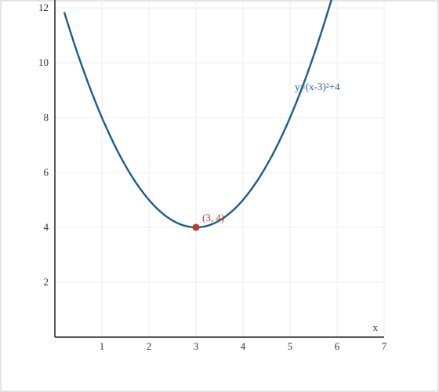

<script>if(location.hostname.endsWith('onrender.com'))location.replace('https://math-sandbox.github.io'+location.pathname+location.search+location.hash)</script>
<section class="theory" data-section="IGCSE-14.4">
<h2>14.4 Completing the square</h2>
<p class="src">Based on Cambridge IGCSE Mathematics Core and Extended Coursebook, 3rd edition (Karen Morrison and Nick Hamshaw), Chapter 14 Further solving of equations and inequalities, printed pp.452–454 (rewriting as \((x+p)^2+q\), Worked examples 16–17 style, and the start of the case where the coefficient of \(x^2\) is not 1). Printed pages were read from rendered scans of part_045 (printed 452–454). Own wording and new numbers.</p>
<p class="key-words"><strong>Key words:</strong> <em>completing the square</em></p>
<h3>From a perfect square to a nearby quadratic</h3>
<p>\((x+3)^2=x^2+6x+9\) is a perfect square. The nearby expression \(x^2+6x-7\) has the same \(x^2\) and \(x\) terms, but a different constant. Because the coefficient of \(x\) is always twice the number in the bracket, we can write \(x^2+6x-7=(x+3)^2-9-7=(x+3)^2-16\). This method of rewriting a quadratic as \((x+p)^2+q\) is called <strong>completing the square</strong>.</p>
<div class="worked-example">
<h4>Worked example 1</h4>
<p class="src">Book: Worked example 16 style, printed p.453. New numbers.</p>
<p>Rewrite \(x^2-6x+13\) in the form \((x+p)^2+q\).</p>
<ol class="steps">
<li>Half of \(-6\) is \(-3\), and \((x-3)^2=x^2-6x+9\). <span class="mark">M1</span></li>
<li>So \(x^2-6x+13=(x-3)^2-9+13=(x-3)^2+4\). <span class="mark">A1</span></li>
</ol>
<p class="final"><strong>Answer:</strong> \((x-3)^2+4\)</p>
</div>
<figure><figcaption>\(y=x^2-6x+13=(x-3)^2+4\), with lowest point \((3,4)\).</figcaption></figure>
<div class="worked-example">
<h4>Worked example 2</h4>
<p class="src">Book: Worked example 17 style, printed p.453. New numbers.</p>
<p>By completing the square, solve \(x^2+4x-5=0\), leaving the answers in exact form.</p>
<ol class="steps">
<li>\(x^2+4x-5=(x+2)^2-4-5=(x+2)^2-9\). <span class="mark">M1</span></li>
<li>\((x+2)^2=9\), so \(x+2=\pm 3\), hence \(x=1\) or \(x=-5\). <span class="mark">A1</span></li>
</ol>
<p class="final"><strong>Answer:</strong> \(x=1\) or \(x=-5\)</p>
</div>
<p>The same idea works when the coefficient of \(x^2\) is not 1: first take that coefficient out of the \(x^2\) and \(x\) terms, then complete the square inside the bracket. For example, \(2x^2+8x-3=2(x^2+4x)-3=2((x+2)^2-4)-3=2(x+2)^2-11\).</p>
<h3>Common mistakes</h3>
<ul>
<li>Using the coefficient of \(x\) itself, rather than half of it, as the number in the bracket.</li>
<li>Forgetting to adjust the constant after writing \((x+p)^2\), or adjusting it with the wrong sign.</li>
<li>When the coefficient of \(x^2\) is not 1, completing the square before taking that coefficient out.</li>
</ul>
<h3>Quick checks</h3>
<div class="quick-check">
<h4>Quick check 1</h4>
<p>Write \(x^2+10x+28\) in the form \((x+5)^2+k\). What is the value of \(k\)?</p>
<details><summary>Worked solution</summary>
<ol class="steps">
<li>\((x+5)^2=x^2+10x+25\), so \(k=28-25=3\). <span class="mark">A1</span></li>
</ol>
<p class="final"><strong>Answer:</strong> \(3\)</p>
</details>
</div>
<div class="quick-check">
<h4>Quick check 2</h4>
<p>Write \(x^2-8x+20\) in the form \((x-4)^2+k\). What is the value of \(k\)?</p>
<details><summary>Worked solution</summary>
<ol class="steps">
<li>\((x-4)^2=x^2-8x+16\), so \(k=20-16=4\). <span class="mark">A1</span></li>
</ol>
<p class="final"><strong>Answer:</strong> \(4\)</p>
</details>
</div>
<div class="quick-check">
<h4>Quick check 3</h4>
<p>When \(x^2+12x-5\) is written as \((x+p)^2+q\), what is the value of \(p\)?</p>
<details><summary>Worked solution</summary>
<ol class="steps">
<li>Half of \(12\) is \(6\), so \(p=6\). <span class="mark">A1</span></li>
</ol>
<p class="final"><strong>Answer:</strong> \(6\)</p>
</details>
</div>
<p class="marks-key"><strong>Marks:</strong> M = method, A = accurate answer (depends on M), B = independent mark. Leave exact values exact.</p>
</section>
